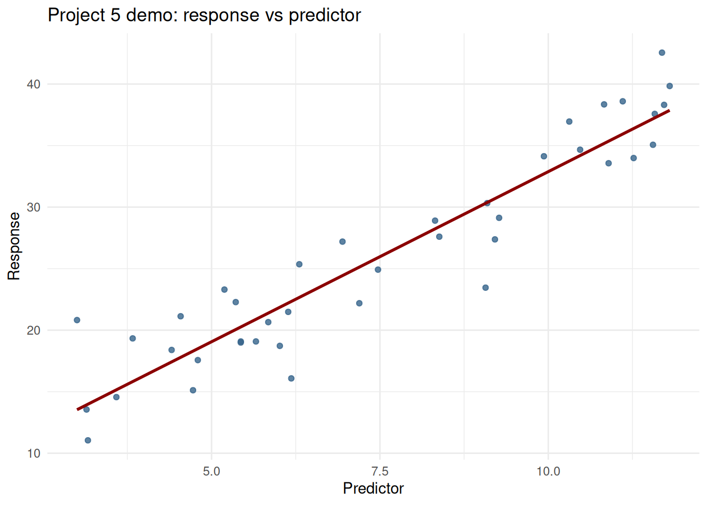

Code
if (!requireNamespace("tidyverse", quietly = TRUE)) {
install.packages("tidyverse", repos = "https://cloud.r-project.org")
}
library(tidyverse)STAT 109: Project 5 work session - Google Sheets to linear regression in R
Open in Colab — after it opens, use Runtime -> Change runtime type and select R if needed.
By the end of this lab, you should be able to:
readr::read_csv() (same pattern as TidyTuesday URLs).lm(response ~ predictor).summary(), coef()).predict().Use class/lab time to make progress on Project 5. This demo gives a complete, minimal workflow:
If you are running this outside Colab in RStudio:
.R script or .qmd).ls, git status, etc.) if needed.Typical workflow:
Ctrl+Enter / Cmd+Enter)..qmd) demoA practical next step from .ipynb is a .qmd file for a more reproducible workflow (same code + clean rendered output such as PDF/HTML).
Motivation: ultimately, in statistics we usually need to deliver a clear document/PDF/slides that communicates results. Quarto is a strong workflow for this because it keeps a direct connection between your final output, your analysis code, and your dataset. That reproducible link makes your work easier to check, update, and trust.
---
title: "Mini Demo"
format:
pdf: default
---
# Mini analysis
```r
# Quarto chunk options would normally go at the top of a real chunk, e.g.:
# #| echo: false
# #| fig-cap: "Scatterplot of response vs predictor."
# #| fig-width: 5
# #| fig-height: 3.5
library(tidyverse)
dat <- readr::read_csv("https://docs.google.com/spreadsheets/d/YOUR_SHEET_ID/export?format=csv&gid=0")
ggplot(dat, aes(predictor, response)) + geom_point()
```--- block): document metadata and output format.#| ...): instructions for rendering (caption, plot size, hide/show code, etc.).echo: false hides code but still shows output/figure.echo: true when you want students/readers to see code.From Terminal:
quarto render your-file.qmd --to pdfCreate a sheet with a header row, for example:
predictorresponseThen:
https://docs.google.com/spreadsheets/d/SPREADSHEET_ID/edit#gid=0https://docs.google.com/spreadsheets/d/SPREADSHEET_ID/export?format=csv&gid=0read_csv().This is the same idea as reading a raw CSV from GitHub/TidyTuesday: read_csv("https://...csv").
if (!requireNamespace("tidyverse", quietly = TRUE)) {
install.packages("tidyverse", repos = "https://cloud.r-project.org")
}
library(tidyverse)Replace sheet_csv_url with your own export link:
# Example placeholder: replace with your actual sheet CSV export URL
sheet_csv_url <- "https://docs.google.com/spreadsheets/d/YOUR_SHEET_ID/export?format=csv&gid=0"
# dat <- read_csv(sheet_csv_url, show_col_types = FALSE)
# For this page preview only, we create a fallback demo dataset:
set.seed(1313)
dat <- tibble(
predictor = runif(40, 2, 12),
response = 8 + 2.5 * predictor + rnorm(40, 0, 3)
)
glimpse(dat)Rows: 40
Columns: 2
$ predictor <dbl> 10.828502, 5.842035, 9.093150, 6.944254, 8.381935, 8.318950,…
$ response <dbl> 38.34909, 20.65276, 30.32511, 27.19635, 27.59800, 28.90071, …head(dat, 8)# A tibble: 8 × 2
predictor response
<dbl> <dbl>
1 10.8 38.3
2 5.84 20.7
3 9.09 30.3
4 6.94 27.2
5 8.38 27.6
6 8.32 28.9
7 4.41 18.4
8 3.00 20.8Fit simple linear model:
fit <- lm(response ~ predictor, data = dat)
summary(fit)
Call:
lm(formula = response ~ predictor, data = dat)
Residuals:
Min 1Q Median 3Q Max
-6.8535 -1.7948 -0.4836 2.3362 7.2845
Coefficients:
Estimate Std. Error t value Pr(>|t|)
(Intercept) 5.2368 1.3195 3.969 0.00031 ***
predictor 2.7647 0.1641 16.850 < 2e-16 ***
---
Signif. codes: 0 '***' 0.001 '**' 0.01 '*' 0.05 '.' 0.1 ' ' 1
Residual standard error: 2.955 on 38 degrees of freedom
Multiple R-squared: 0.882, Adjusted R-squared: 0.8789
F-statistic: 283.9 on 1 and 38 DF, p-value: < 2.2e-16coef(fit)(Intercept) predictor
5.236843 2.764674 Prediction at a new value:
new_x <- tibble(predictor = 8)
# Point prediction
predict(fit, newdata = new_x) 1
27.35424 # Confidence interval for mean response at predictor = 8
predict(fit, newdata = new_x, interval = "confidence", level = 0.95) fit lwr upr
1 27.35424 26.39527 28.31321Scatterplot with fitted line:
ggplot(dat, aes(x = predictor, y = response)) +
geom_point(alpha = 0.8, color = "steelblue4") +
geom_smooth(method = "lm", se = FALSE, color = "darkred") +
labs(
title = "Project 5 demo: response vs predictor",
x = "Predictor",
y = "Response"
) +
theme_minimal()
gid in URL points to a different tab.names(dat).as.numeric() only after checking raw values/units.For Project 5, this workflow is intentionally minimal: a clean reproducible path from shared data to interpretable prediction output in R.